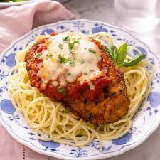

Chicken Parmesan

Description
How to make the Italian classic, Chicken Parmesan! Crispy baked chicken in a rich marinara sauce and covered in melted mozzarella cheese. This recipe is out of this world delicious and a tried and tested family favorite. Serve on a bed of spaghetti or mashed potatoes.
List of Ingredients
- Chicken Breast
- Mozzarella
- Parsley & Basil
- Marinara Sauce
- Eggs
- Olive Oil
- Italian Breadcrumbs
- Salt & Pepper
- Parmesan
- Panko Breadcrumbs
- Flour
Steps
- Cut the chicken into half lengthwise.
- Pound them into thin cutlets using a meat mallet or rolling pin.
- Mix the breadcrumbs, herbs, and some of the parmesan togethDredge each piece of chicken in flour.
- Next, dip each piece of chicken in beaten eggs.
- Finally, coat the chicken in the breadcrumb mixture until thoroughly coated.
- Pan-fry the chicken in olive oil until crispy, you’ll probably need to do this in batches then let them drain on kitchen paper.
- Place the chicken pieces on a baking tray and topped with marinara sauce, mozzarella cheese, and a little more parmesan. Bake until melted, bubbling, and golden.